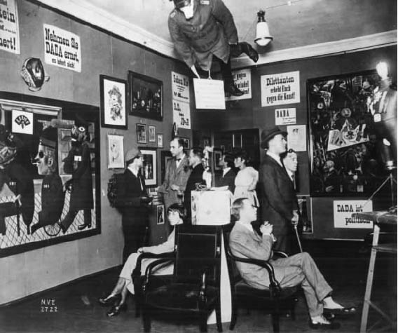
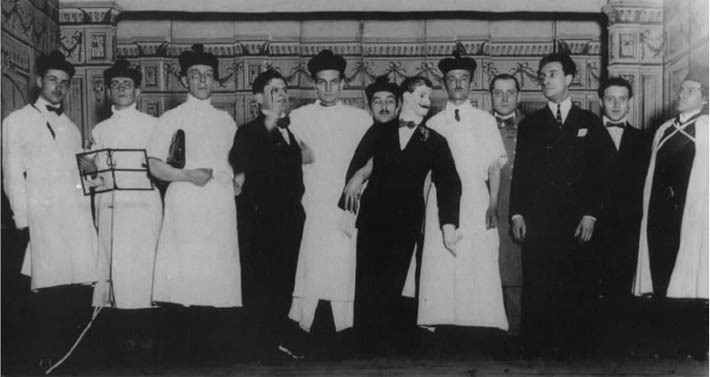
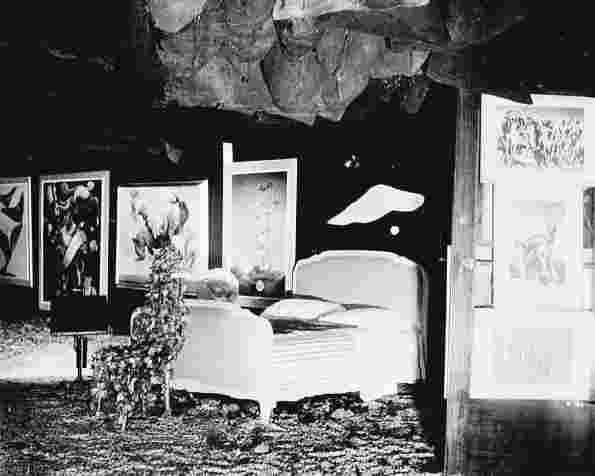
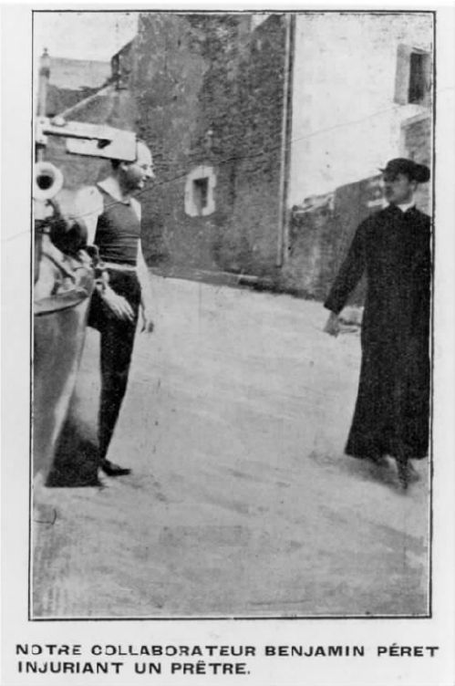
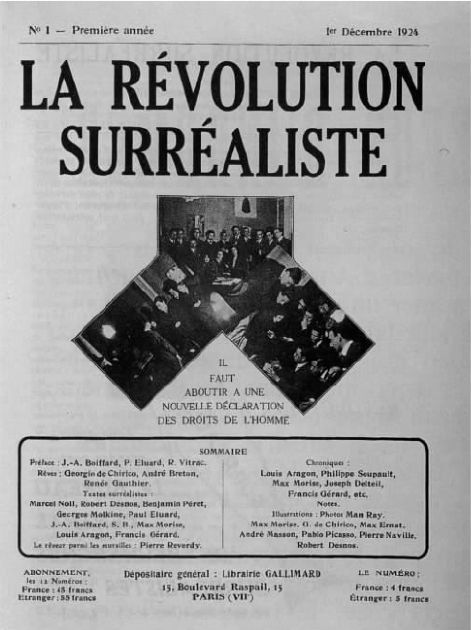
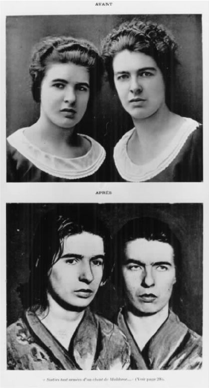
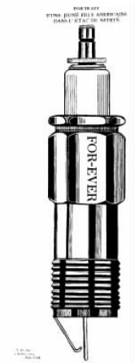
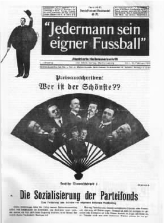
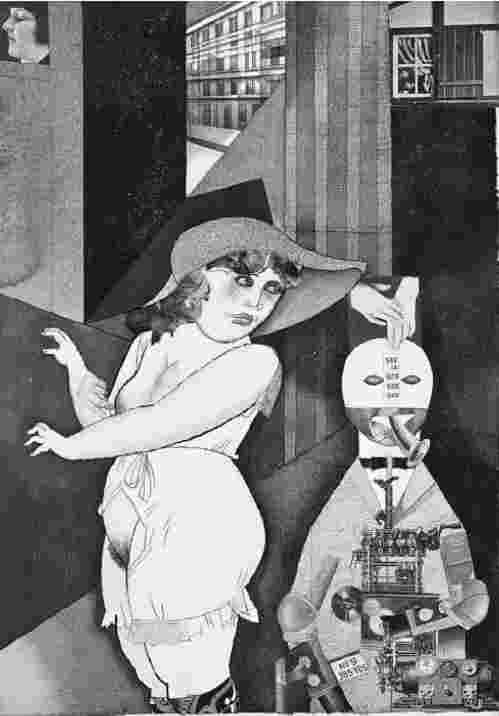
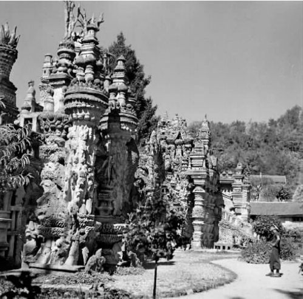

超现实主义“教皇”安德烈·布勒东在1923年的一首诗中断言生活远高于艺术，他用这样的诗句来结尾：“既然字词变得过于盛行，宁要生活。”既依恋达达又爱慕超现实主义的艺术家和诗人拒绝让生活经历从属于艺术经历。也许他们在试图调停这些原则时显得过于理想主义或太过天真，但正是这一层面的抱负才赋予了达达和超现实主义先锋文化组织的典型特征。那么，这些运动是如何渗透到日常生活的结构之中的？它们是如何试图渗入艺术馆之外的世界的？它们是如何推销自己的？
在本章中，我将集中讨论达达主义者和超现实主义者对“活动”的嗜好——不管是在一些偏僻地区的短暂表演，还是宣传得很好的公开事件——以及他们进入美术馆并在其内创造引人注目的展览的能力；我还将仔细研究他们的刊物以及他们对摄影技法的使用。
达达和超现实主义者除了向外部世界展示自身之外，又是如何思考他们与世界，即与社会的现代性现象的关系的？为了集中讨论这一问题，我将研究他们与流行文化之间的关系，思考他们是如何理解城市自身的功能的。在上一章基本叙述的基础之上，我将详述一些关键“时刻”，以便用达达和超现实主义的“快照”创作出一幅拼贴。
首先让我们回到达达的一个创建时刻。如果我们在1916年6月23日夜晚进入伏尔泰酒馆，我们就会置身于一间屋子当中，内有一个小舞台、一架钢琴、供约50人就座的桌椅。一张马塞尔·扬科现已丢失的画作（见图2）的照片显示，当时在表演者和观众之间几乎没有任何空隙。目击者的描述强调房间里烟雾缭绕，醉酒学生、社会主义知识分子、逃避兵役者和无业游民粗野吵闹，因为酒馆地处苏黎世的“娱乐区”。
达达主义诗人雨果·巴尔被带到了这个舞台上。他在日记中写道：
他被带到一排绘有临时涂鸦的乐谱架之后就严肃地大声说道：
我们该如何反应？观众可能发出了嘲笑声。在另一个场合，巴尔这样来预先指点他们：“在这些语音诗歌里，我们完全抛弃了已被新闻业滥用的语言……我们必须恢复字词最幽深之处的魔力。”这一说法在一定程度上解释了其咒语的十足荒谬性。巴尔自己深陷其中。某次他发现自己用一种礼拜仪式的风格在吟唱，这把他带回到在天主教氛围中度过的童年时期；他被人带下舞台时“浑身被汗水浸透，像个魔法主教”。不久之后，他永远离开了达达，最终投身到宗教研究中去。
这一时期，伏尔泰酒馆的其他达达演出达到了高潮。事实上，为了反对战争并重现战争给人们带来的创伤和混乱，达达主义者释放了让他们自己都觉得心神不宁的力量。因此，达达的系列活动在1916年中期到1917年初有所减少。
此后，苏黎世达达逐渐变得“体面”起来。该团体搬到了利马河的另一边，在口碑不错的资产阶级市民大楼里举办晚会。曾在史宾利糖果店楼上的房间里举办过很多活动的画廊达达，最终将被理查德·许尔森贝克描述为“工艺美术的修甲沙龙，其特征是一群喝茶的老妇人借助于某种‘疯狂之物’，试图恢复其正在失去的性能力”。此处的达达晚会门票昂贵，客人的名单也都预先拟好。由此可以清楚地看出，不管我们认为达达有多么放荡不羁，它还是迅速被资产阶级模式同化了。当然，更重要的一点是，达达主义者极具讽刺意味地发现他们必须吸引一群受过良好教育的、开明的观众，以求得他们的“理解”。这一讽刺将作为贯穿达达和超现实主义先锋活动的主题而延续下去。
有关达达的流言最初来自一些参与者很少的活动。因此，从一开始达达就依赖于自我神话的创造过程。从创办初期开始，达达团体自我推销的另一途径是效仿意大利的未来主义杂志《蝎虎座》和英国的漩涡主义杂志《冲击波》，借助团体出版物来实现。苏黎世团体的第一份出版物《伏尔泰酒馆》于1916年6月面世，这是一份相对严谨的出版物，其中刊登了毕加索等著名先锋派人物和达达主义者的作品。它甚至用原版木刻印刷了精装版。苏黎世达达的第二份评论是1917年至1919年出版的《达达》，其设计更加大胆，使用了不一致的字体，这在《达达》第三期中表现得尤为突出。同时它也更加自信、更为“国际化”，刊登了弗朗西斯·皮卡比亚和路易·阿拉贡等其他地方的达达主义者创作的诗歌。
在某种意义上，苏黎世达达因其传奇般的酒馆活动和部分手工刻印的杂志而显得相当“自助”，它确实较少使用现代宣传技术。我们可以思考一下后来的柏林达达交易会，就会发现相反的发展进程。

图5 第一届国际达达交易会的布置图，柏林，1920年6月。
这一活动的著名先驱是1920年4月20日的科隆达达交易会，它不甚严谨却十分讽刺地模仿了一场商业交易会。科隆交易会的设计旨在引起观众最大程度的反感。人们通过啤酒大厅的公共小便池进入展场。在展览会开幕式上，一名穿着圣餐仪式服装的年轻女孩朗诵色情诗歌以招待观众。展出的作品包括马克斯·恩斯特的一件雕塑，旁边系着一把用来破坏它的斧子。1920年6月30日至8月25日在一家商业艺术馆举办的柏林展览会被授予“第一届国际达达交易会”的称号，展出了约两百件用各种材料制作的物品。虽然它同样是反抗传统的，但从一开始它就想要尽可能获得最广泛的宣传。那张艺术馆主展厅的著名照片（图5）被广泛复制。照片显示一件塞得鼓鼓囊囊的普鲁士军官制服从天花板上悬挂下来，颈上还配着一只石膏猪头；乔治·格罗兹和约翰·哈特菲尔德构想的时装模特的头颅是一只发光灯泡。世界各地的报纸——从巴黎到布宜诺斯艾利斯——都刊载了有关这一活动的文章。与伏尔泰酒馆一样，柏林的达达交易会也将会是一次非常迷惑人的经历。正如我们从照片上看到的那样，交易会的展示墙上挂着豪斯曼等人制作的照片蒙太奇和格罗兹或奥托·迪克斯的画作。与之争辉的是那些写着“达达与革命的无产阶级在一起”、“每个人都可以做达达”、“艺术死了：塔特林的新机器艺术万岁”等标语的海报。观众很难将展出的（反）艺术和这些接二连三挑起论战的一大堆事物区分开来。当然，这正是举办者想要达到的效果。尤其是支持塔特林的那条标语揭示出了柏林团体的整体战略。塔特林是俄国建构主义的领军人物，尽管柏林达达主义者只是部分地了解他的作品，他们却认为他体现出了与表现主义所代表的伪信仰正好相反的一种新的唯物主义的艺术姿态。但有关这一活动的主要一点是，大量出现的标语显示出柏林达达主义者意识到了广告在日常生活中的力量正变得日益强大。他们并非远离商业世界的发展进程，而是借助它的策略以传播自己的思想。
我们已经审视过的两种达达宣传活动——一个很“自助”但很快被当作神话，另一个明显地转向大众宣传——标志着达达运动推翻现有价值观或使之相对化的愿望。再来看看两个类似的活动——一个是原始超现实主义的，另一个是完全超现实主义的——我们也许可以强调达达和超现实主义之间的一些至关重要的差异，其中的首要差别揭示了1921年至1924年在巴黎发生的从达达到超现实主义的转变，这一转变作为“朦胧运动”的一部分而出现。
1921年5月13日，安德烈·布勒东和一群他的达达盟友们以及许多文学和政治名人参与了一场古怪的“模拟审判”，以检验布勒东的信念。他坚信著名的右翼作家莫里斯·巴莱斯犯了“危害精神安全罪”。我们看一下这一活动的照片，就会发现当时的情形进展到多么荒谬的程度。达达主义者们把自己精心装扮成高级法院的法官，而不愿屈尊前来为自己辩护的巴莱斯就由一个木偶来代表。然而，这次审判是精心安排的，其基调是冷静清醒的，其中并无上文已经讨论过的先前那些达达示威活动的自发特性（如伏尔泰酒馆里发生的一切）。

图6 对莫里斯·巴莱斯的模拟审判照片： 1921年5月13日。从左至右：路易·阿拉贡、无名人士、安德烈·布勒东、特里斯坦·查拉、菲利普·苏波、泰奥多尔·弗伦克尔、代表巴莱斯的木偶、乔治·里伯蒙-德塞涅、邦雅曼·佩雷和其他达达成员。
在很多方面，这场审判从一开始就被设想成是布勒东所作的一次“立场陈述”，同时也是一次拍照机会（这一策略将在后文详细讨论）。一些人花钱出席这次审判，但它的重点却明白无误地放在参与者及其对于意识形态的看法上。重要的是，这些参与者中不仅有达达主义者，还有受邀的“目击证人”，包括民族主义者兼小说作家拉希尔德和在法庭上为政治犯辩护的共产党员乔治·皮奥奇。该审判在巴黎市郊俱乐部曾经的会址里进行。该俱乐部是法国大革命时期形成的一个辩论社团，曾邀请著名的公众人物在一个相当放荡不羁的特别法庭上讨论政治事件。（有一次俱乐部会议鼓动攻打巴士底监狱。）
布勒东及他的同庭“法官们”认为，阿拉贡曾尤为欣赏的巴莱斯背叛了他在19世纪八九十年代创作的小说中体现出的个人良知。如此一来，他就屈从于第一次世界大战期间法国的政治右翼转向。因此，布勒东要通过一次达达活动来检验一系列相互关联的思想，但是这些思想还是对尚处于萌芽阶段的、关注想象权利的超现实主义团体产生了明显的作用。这次活动也是文化政治学的一次演练。特里斯坦·查拉对达达竟然承担审判工作感到吃惊和鄙视，认为布勒东的行为标志着达达转向了一个统一的先锋计划；这一转向将在第一章已提及的“巴黎代表大会”上完成并最终转变成超现实主义。
如果说这次原始超现实主义的“模拟审判”与达达主义者在伏尔泰酒馆的自发活动直接相关的话，在许久之后的另一次活动中，羽翼已丰的超现实主义运动举办的一次展览则与柏林的达达交易会形成鲜明对比。总体而言，超现实主义在其发展初期会把展览布置得比较传统；一直到20世纪30年代后期，主要是为了显示该运动的日益国际化，团体成员们才开始像达达主义者曾经做过的那样在展会设计上进行实验。1938年在巴黎乔治·维尔登施泰的美术馆举办的一场大型的国际超现实主义展览是一个至关重要的转折点。
布勒东充分挖掘前达达主义者马塞尔·杜尚的天赋来布置展会。杜尚颁布“法令”，1200个满是灰尘的装煤口袋被塞满报纸，低低地悬挂在主展厅的上方，整个展厅只用一只点燃的火盆来照明，因此很难看到展品。开幕式为观众配备了火把。展厅的两个角落各放一张大床，使得展厅空间里的活动更像是发生在夜间。
还有其他引人注目的花样。在该建筑的庭院里，参观者可以窥见到萨尔瓦多·达利的《下雨的出租车》：一个穿着暴露的女模特，身上爬满蜗牛，坐在后座上，后座上方垂下一条小瀑布。进入展区，人们不得不沿着一条“模特街”走一遭，因此，会在想象中对这16位穿着性感的模特加以“选择”。这些模特可被塑造为“街头妓女”，她们每个人都是不同的超现实主义艺术家想象的结果。

图7 巴黎美术馆内国际超现实主义展览的布置图，巴黎，1938年。
这些效果与柏林达达主义者在交易会上创造的效果区别很大。两个团体一开始都让人迷惑，但是超现实主义者明显注重诱发人的无意识想象，而非关注达达主义者偏爱的物质材料所引发的震惊。1938年展览的主展厅所使用的夜景布置明显会引发梦境，而“模特街”则以某种方式鼓励了色情想象，这些对达达的讽刺本能来说都将是陌生的。像达达主义者一样，超现实主义者也把展会布置当作获取公众注意的一种手段，但他们与时尚界联系之密切远远超过了他们的先驱。例如，这些模特是从知名时尚工作室借来的。从某种程度上而言，1937年萨尔瓦多·达利开始与埃尔莎·夏帕瑞丽在服装设计领域进行合作并非巧合。在达达交易会上，达达主义者滑稽地模仿着商业，而超现实主义者在某种程度上与商业串通一气。诚然，这与他们决心建立的国际化形象密切相关：先前已有两次国际化的超现实主义展览分别于1935年和1936年在布拉格和伦敦举行。对比之下，柏林达达交易会看起来几乎是地区性的。但是，在某种程度上，超现实主义者冒着“出售给”商业世界的风险。如果说1921年的“模拟审判”证明了该团体在意识形态方面的简单朴素，那么1938年的展览则揭示出其想要获取公众注意力的天性是如何危害其政治的。这一主题以后还会再现。
到目前为止，我们看到的都是活动，现在来看看人。如果说在寻找机会开展商业实践以及在各种各样的表演活动和展览中，达达和超现实主义的原则通过最高的营销天分被推销了出去，那么这些运动中的诗人和艺术家是如何专注于个人形象的塑造的？成为 达达或成为 超现实主义者又意味着什么？
我们普遍会把达达和超现实主义看作是怪异行为的同义词；尤其在达达中有大量的事例来证明这一点。也许最引人入胜的是阿瑟·克拉旺的故事。身为奥斯卡·王尔德的外甥，1887年在瑞士出生的克拉旺频繁地在欧洲四处巡游。在巴黎，他于1912年至1915年期间出版过一本粗俗文学杂志《现在》，用它来辱骂艺术界的先锋派成员。1916年他在巴塞罗那挑战重量级世界拳击冠军杰克·约翰逊，要求搏斗。克拉旺身材结实，是个业余拳击手，习惯在搏斗前用一长串不太可能的身份来介绍自己——“旅馆小偷、骡夫、耍蛇者、司机”等等。不管他的资历如何，他可不是约翰逊的对手，在第六回合就被打倒在地。并不奇怪的是，正在巴塞罗那逍遥派杂志《391》上发表评论的达达主义者弗朗西斯·皮卡比亚激情高涨地拥戴克拉旺。1917年克拉旺在美国出现时，马塞尔·杜尚逮住他，让他向“独立艺术家协会”（下文还将多次提及）之下的分会发表演讲。克拉旺上演了一场名副其实的达达表演，到场时已喝得醉醺醺的，撕裂了衣服，最后被纽约警方逮捕。他于1918年彻底消失。漫游的强烈愿望将他带到了墨西哥，据说他在那里乘划艇出发去布宜诺斯艾利斯，此后再也没人见过他。
克拉旺是否采取了某种象征性的达达自杀行动？就此人们可以展开讨论，但他对传统的蔑视使他身后留名。在此意义上，他集中体现了这一达达信念，即一个人的生活方式本身就足以保证他获得一种达达资格。克拉旺身上一种典型的达达特征是他对假身份（旅馆小偷等）的偏好。达达运动的参与者常为自己创造化名。在柏林，理查德·许尔森贝克以“世界达达”而出名，劳乌尔·豪斯曼是“智慧达达”，约翰内斯·巴德尔自封为“超级达达”。顺便提一句，巴德尔将其妄自尊大的特性提高到了极端滑稽的程度，在纯粹的虚张声势方面堪与克拉旺媲美。他此前曾在一次达达宣言中宣称自己是“地球总统”。1919年2月，他打断了魏玛国家集会的开幕会议，要求政府由达达主义者接手。在科隆，马克斯·恩斯特成为“达达马克斯”；在纽约，杜尚穿上时尚女装，装扮成神秘的萝丝·瑟拉薇，让曼·雷给自己拍了一幅照片。萝丝·瑟拉薇是一个故意使用的简单双关语，其法语发音就和短语“爱欲即生命”一样。
通过发展另一种表象人格，达达主义者暗示身份并不是固定的，而是不断处于一种变迁状态。他们或明或暗地质疑了人的性格中永恒不变的核心或内在的“人类本性”，而这一观念本身是资产阶级意识形态的一部分。这种质疑通过杜尚的性别错位得以延伸，以至于由生物学决定的性别身份也受到质疑。就我们所讨论的艺术家的“形象”而言，这种观点表明，一个稳固或确定的形象恰恰是达达主义者所要避免的；因此他们欣赏在社会上粗暴无礼、故作姿态的克拉旺之类的人。正如柏林达达交易会所揭示的那样，他们对现代社会狂热偏好公共宣传和大场面的做法持矛盾态度，在支持它的同时也在破坏它。
让我们转而讨论超现实主义艺术家的公众表象人格。考虑到该运动对心理分析的痴迷，而其成员却没有广泛地采用另一种身份，这真是让人吃惊。马克斯·恩斯特采用的另一自我——“鸟之超级剪枝”是个明显的特例。这些艺术家大都喜欢在外在的穿着上循规蹈矩，这种做法延续并强化了19世纪后期花花公子式的行为准则，过度的显摆因而被认为是粗俗的。几位著名的超现实主义者戴着极富花花公子特征的单片眼镜（像许多达达主义者一样），而比利时画家马格里特则臭名远扬地通过城里绅士常备的礼帽和雨伞掩盖了任何想象性的自我。当超现实主义者纵容自己对奇装异服或恼人的身份变化的喜爱之情时，他们通常是在上流社会的化装舞会这一可被接受的社交背景中。例如几张马克斯·恩斯特的值得纪念的照片显示，他在1958年的一次活动中打扮成前文提及的剪枝状。萨尔瓦多·达利在这方面一直是个显著的例外。
达利著名的向上弯翘的小胡子代表了其炫耀式的表演技巧。但是达利现象之所以会引人注目更是因为学习现代主义的学生发现这位艺术家的自我宣传是如此令人难堪。达利给超现实主义者带来了难题。他仅在1929年至1934年间得到安德烈·布勒东的全力支持，此后两人的关系变得相当冷淡。达利公然藐视超现实主义的所有意识形态；而且随着20世纪30年代的推进，他既拥护君主制又支持法西斯观点。他还天生媚俗，对新艺术运动过度的奢华装饰也十分着迷——1933年他在超现实主义杂志《人身牛头怪》上发表过一篇富有创意的文章，评论赫克托·吉马德设计的巴黎地铁入口卷须状的铁制品。他花里胡哨、炫耀高超技巧的画作从开始就是反美学的。他说它们是“瞬间色彩的摄影，由超级精细的手工绘制而成，十分华丽……表现了具体的、非理性的、超图片的、超级可塑的、欺骗性的、超常态的脆弱形象。”
达利固执的自我迷恋，以及对政治不正确和美学上矫揉造作之物的热爱，可被看做是一种刻意的决定，故意要扮演安德烈·布勒东眼中的俗人。这位超现实主义的领导人将把达利的姓名变形为“渴望美元”，由此可以看出达利后期所有的商业动机是为正式的超现实主义所否认的。然而，正如前文已表明的那样，超现实主义在20世纪30年代后期的公开展览中已经令人不快地与资本主义“联姻”了，而达利只不过是承认这个事实罢了。其他超现实主义者也毫不含糊地意识到了达利的宣传价值；因此虽然此时达利已正式失去他们的支持，但他还是出现在了1938年的展览上。达利在低俗品位方面的天才促使乔治·奥威尔写了篇评论，该评论被认为是20世纪30年代主流文学界对超现实主义做出回应的为数不多的作品之一。尽管奥威尔认为达利“像跳蚤一样地反社会”，其作品是“病态的、让人厌恶的”，但是奥威尔也因其艺术作品发起的道德挑战而感到焦虑不安。我们也许可以由此推断，在超现实主义者中，只有达利一人的公众形象才吻合达达急躁易怒的标准。
我们刚才讨论了达达主义者和超现实主义者是如何专心致志地塑造自己的形象的，但是他们的名声究竟是如何确立的呢？毕竟当时先锋派艺术的观众为数极少。第一份超现实主义杂志《超现实主义革命》在其五年生命结束之际总共才只有一千名订阅者。超现实主义的观众总体而言不可能更多。
就达利的情况而言，有关其怪异活动的消息迅速传播开来：例如1936年在伦敦举办的国际超现实主义展览上，达利身穿一套深海潜水员的服装，相当引人注目。不过名声通常是通过更加隐蔽的方式而被确立的。杜尚的名字代表了达达和超现实主义中与传统最格格不入的一些作品，但他本人却很低调，（故意）让人费解。那么对杜尚的崇拜是如何形成的呢？
1917年4月，杜尚的小便池被纽约“独立艺术家协会”展览拒绝，对此上文已有一段简要描述。一个月之后，一本薄薄的原始达达杂志《盲人》出版，其中刊登了这件冒犯了组委会的作品的照片和一篇匿名短文，文章以嘲弄式的愤慨来回应小便池的被拒，并为之辩护，驳斥对其剽窃的指责：
我们可以确信，杜尚就躲在这篇文章背后。他很可能是让他诸多女友中的一位，碧翠丝·伍德来撰文的，因为这篇短文为他的“现成品”提供了哲学依据（这一点将在第三章中作进一步讨论）。但是这篇文章不容忽视的原因在于它制造了一场原本不会存在的辩论：有关《泉》被拒这一事件几乎无人知道。甚至原作在“独立艺术家协会”展览期间也似乎一度消失了。如果说《泉》成了达达的圣像，那也得归功于载于《盲人》杂志、由现代派摄影师阿尔弗雷德·斯蒂格利茨所拍摄的照片（图3），虽然此后杜尚又令人尴尬地制作了“复制品”。
所有这一切表明，包括《泉》及相关“丑闻”在内的事件都是精心安排的。与此同时，一个十分重要的话题变成了问题的焦点：达达和超现实主义的出版物是如何发挥作用的？
达达主义者在运动的各个地点接二连三地出版了一批杂志，其中《盲人》是最早出版的杂志之一。影响最广泛、持续时间最长的可能是弗朗西斯·皮卡比亚的《391》。从1917年到1924年，皮卡比亚在他当时居住的城市，巴塞罗那、纽约和巴黎断断续续地发行了这份刊物。杂志名称显示出它是在美国摄影师阿尔弗雷德·斯蒂格利茨更早些时候出版的杂志《291》的基础之上变化而来的。“291”是指斯蒂格利茨位于纽约第五大道的美术馆的门牌号码。
在1920年的一期《391》中，皮卡比亚为杜尚传奇的传播作出了进一步贡献。他选用了杜尚反艺术的挑衅之作《长胡子的蒙娜丽莎》——1919年创作的“辅助现成品”，一幅嘴唇上添加了胡子的蒙娜丽莎画像——并复制了它（不过没有添加下巴上的胡子，似乎他忘了），然后将这件复制品和他自己的一幅泼墨画的复制品放在一起，把它们命名为《圣女》，由此确定了两幅作品的狼籍声名。1922年10月，在另一份达达杂志，即巴黎团体的宣传刊物《文学》上，杜尚的神话因安德烈·布勒东撰写的一篇重要文章而得以巩固。其中布勒东提出了“理性杜尚”的概念，认为杜尚更感兴趣的是作出姿态而非创作艺术作品，而这无疑在新生的超现实主义团体中确保了杜尚的名声：“是不是因为马塞尔·杜尚能比其他任何人更快地到达思想的关键之 处 呢？”
很清楚，杜尚的神话既是通过杂志和神秘照片，也是通过他相对贫乏的作品展览而形成的。他在1963年举办回顾展之前，一直没有真正意义上的个人作品展出。即使他最著名的作品《甚至，新娘也被她的男人剥得精光》的名气也是来自超现实主义杂志上赞赏它的文章和旁白，而不是那些真正看过这幅作品的人。其中最著名的是布勒东发表在1934年《人身牛头怪》第五期上的文章《新娘的灯塔》。杜尚本人如何精心确立自己的名声十分有趣，不过在此我们无法多作讨论。达达的出版物确实替他做了许多工作。然而，我们现在必须要做的是发现这些杂志在达达和超现实主义中的功能，以便更深入地探寻这两场运动之间的延续性与区别所在。杂志对超现实主义要比对达达更为重要。同样，如果说摄影对传播杜尚起了关键作用，如我们在《泉》的走红中看到的那样，那么它在超现实主义出版物中则绝对变成了至关重要的工具。
1926年12月，超现实主义杂志《超现实主义革命》上有一张看来无伤大雅的照片，拍摄的是两个人在交流，图片下面的说明文字十分引人注目：“我们的同事邦雅曼·佩雷正在侮辱牧师”（图8）。
这似乎是一张随意的、缺乏深意的摄影图片，但其四周环绕着超现实主义诗人邦雅曼·佩雷的诗，其中一首戏仿“芝加哥圣餐大会”，在会上“每个人都冲向神圣的粪便和受人尊重的唾液”。显然这幅图片不是偶然拍摄的，而是有一个精心制作的场景，其目的在于加强诗中所表现的亵渎神明的信息。实际上它记录了一种“表演活动”。显然，当时佩雷身边有一位朋友在拍摄他的行动。
这是一个很好的例子，解释了照片在超现实主义杂志中的运作方式。我们要探讨的主要评论杂志有《超现实主义革命》（1924——1929年）、《为革命服务的超现实主义》（1930——1933年）和《人身牛头怪》（1933——1939年），不过在本书中我还会提到《文献》（1929——1930年），这是团结在乔治·巴塔耶周围的“变节”的超现实主义者出版的一本宣传刊物。这些出版物使用的照片既包括由超现实主义专职摄影师曼·雷或J.——A.博依法德拍摄的、在工作室里合成的照片，也包括那些仅仅是从其他地方挪用的照片。这些图片被放在学术文章、文学散文、梦的记载等语境之中，常与超现实主义画作的复制品争辉。这些杂志的版面设计要比达达杂志如皮卡比亚的《391》素净得多，后者常随意改变字体。实际上，《超现实主义革命》的模仿对象是19世纪的一份严肃科学杂志《自然》。

图8 “我们的同事邦雅曼·佩雷正在侮辱牧师”，《超现实主义革命》第八期上登载的照片（1926年12月）。
通过使用一种“干巴巴”的呈现风格——这种风格使照片等内容看起来像是文件记录或证词，超现实主义者宣布他们忠实于调查计划，把它看作是追问人类命运与“现实准则”的关系的系统尝试。因而这些杂志应被理解为享有特权和反映超现实主义意识形态的场所。

图9 《超现实主义革命》的封面，第一期（1924年）。
佩雷照片中的形象显然与超现实主义者对天主教的强烈反对有关。他们中的许多人在天主教戒律中长大，既反对它的道德主义，又对20世纪20年代早期法国右翼政治团体和天主教会之间的联盟感到震惊。它们先是在“民族国家集团”政府的名义下，此后从1924年开始又在激进分子和社会主义者的统治联盟下结盟。尤其使他们感到羞辱的是，20世纪20年代中期包括让·科克托等人在内的法国知识分子产生了亲天主教倾向。他们对这种趋势的态度体现在《超现实主义革命》1926年6月那一期的封面照片中。照片上一群人眼望天空，题名为《最近的皈依》。这幅图片实际上挪用了一位当时不为人知而现在却很出名的摄影师尤金·阿杰特的作品。阿杰特是巴黎记录片专家，是曼·雷“发现”了这个与他为邻的老人。阿杰特的这张照片摄于1912年，当时仅用来记录一次日食，但是超现实主义者按照典型的样式重新赋予这张照片以自己的含义。
显然，摄影被超现实主义者用来阐明政治或社会信息。一个尤为引人关注的事例是，一幅甚至不知明确出处的图片被再次挪用；它仅仅包括两张由匿名作者拍摄的帕潘姐妹的照片，标名“前”和“后”，1933年5月的《为革命服务的超现实主义》再次刊登了这两张照片。
帕潘姐妹曾犯下最残忍、最轰动一时的罪行，震撼了20世纪30年代早期的法国。在同一份超现实主义杂志中的“社会杂闻”部分，有篇文章对此做了记载。这两位品行无瑕的中产阶级年轻女子由她们的母亲安排在勒芒一户受人尊敬的家庭中做女仆。她们逐渐对主人一家产生憎恨之情，最后像完成仪式似的精确无误地杀死了他们，把他们的眼睛挖了出来，敲碎了他们的头颅。

图10 《帕潘姐妹：前和后》，摘自《为革命服务的超现实主义》，第五期（1933年5月）。
这两张照片中，姐妹俩的面相发生了不同寻常的变化，这种变化与超现实主义对“痉挛美”的迷恋一致。“痉挛美”是一种与非同寻常的视觉现象有关的身体震颤，我们将在后文讨论这一点。不过，超现实主义者也对姐妹俩的行为所代表的对奴役的暴力反抗表示同情。超现实主义者相信，公认的道德观常被用来掩饰伦理上的怯懦，因此他们曾在其他场合敬重罪犯。譬如，在《超现实主义革命》第一期上，他们在热尔梅娜·伯顿的照片周围放上自己的面部照片。伯顿是个无政府主义者，她暗杀了一个极右翼组织的领导人马里于斯·普拉托。因此，帕潘姐妹的图像引起了所有超现实主义者（包括达达主义者）对犯罪和道德关系的长时间思考。
通过在杂志中同时使用照片和文本，超现实主义者与当时的社会问题建立了复杂而讽刺的联系。这更强化了这一观点，即超现实主义对美学的关注与他们对生活及其公众和伦理方面的关注一样多，在这一方面他们表现得比达达还要明显。但是，无论是达达主义者还是超现实主义者都不认为他们的社会兴趣仅仅局限在“官方授权”的公共生活方面。在超现实主义者对帕潘姐妹的兴趣或是达达主义者与商业的夸张的打情骂俏之中，可以看到他们全面参与社会和表现的愿望。虽然大部分达达主义者和超现实主义者来自中产阶级，但他们却对大众文化，或是法语中的“流行”有着浓厚兴趣。
在一篇有关超现实主义的最具洞察力的文章中，德国马克思主义作家瓦尔特·本雅明提出了一个问题：“你设想生活应该采取什么形式？这种生活在某一关键时刻确实是由每个人嘴边哼唱的街头歌曲所决定的。”正是通过援引所谓的“低等”文化材料的革命潜能，这位评论家表现了20世纪早期先锋派中持续出现的一个主题。立体主义等运动对弱化“高雅”和“低等”文化之间的区别非常感兴趣，比如，法国画家莱热将广告主题引入立体主义绘画就体现了这一点。达达和超现实主义的左翼姿态偏离了他们与“流行”的团结一致，尽管20世纪早期大众文化通常是为人们而制造的而不是从他们当中产生的。本雅明特别理解达达主义者和超现实主义者对“日常”诗学的执著。他在讨论安德烈·布勒东的小说《娜嘉》（1928年）——该书记叙了作者与同名女人之间的爱情——时写道：
在这部分和接下来的内容中，我将描述超现实主义者和达达主义者与“日常”建立联系的一些方式。于是本章就从达达和超现实主义是如何把它们的信息嵌入社会的一直谈到社会在何种程度上渗透到它们的作品及生活方式之中。
先来看达达。大量艺术家的事例说明他们常使用本地习语来贬低其作品的“艺术性”。因而皮卡比亚的《裸体状态的年轻美国女郎肖像》（图11）采用了在廉价广告或贸易目录中出现的商业图案。我曾谈到过达达主义者对商业世界的滑稽模仿，以下事实可以强调这一点：“达达”一词除了摘自词典之外（见第一章），就在达达运动出现之前，还被一家位于苏黎世的贝格曼公司用来给美容产品做广告。但是要想说明达达对大众文化的模仿，最好的方式是看看它的一份杂志所提供的另一个例子。这次柏林团体在自己的杂志，即1919年2月出版的《人与足球》的封面上刊出了约翰·哈特菲尔德制作的照片蒙太奇。

图11 弗朗西斯·皮卡比亚，《裸体状态的年轻美国女郎肖像》，《291》上的线条画插图，第4/5期（1915年7/8月）。
与其他柏林达达杂志不同的是——如《达达》采用了不同的字体和多向度的设计，此处的设计讽刺了传统版式。除此之外，像整个的柏林达达一样，理解该杂志的政治背景至关重要。该杂志是柏林达达激进的哈特菲尔德——赫茨菲尔德——格罗兹共产主义集团的系列出版物之一，在柏林共产主义起义发生几周后出版。这次起义由斯巴达克联盟的卡尔·李卜克内西和罗莎·卢森堡领导，在国防部长古斯塔夫·诺斯克的命令下，遭到了自由兵团的残酷镇压。该杂志封面巧妙地攻击了刚刚执政的社民党，其中社民党的领导人和宣传者诺斯克等人的头像在一面打开的扇子上整齐排列，头像上方还有一行字：“有奖竞猜：谁最漂亮？”这直接参照了政治集团在当时的报纸上做广告时所采用的有奖竞猜的海报设计方式。该杂志还有针对性地用哈特菲尔德的兄弟维兰德·赫茨菲尔德的一篇文章作为开始。在文中，赫茨菲尔德质疑社民党赢得的竞选是否民主，因为它的广告宣传活动是由支持社民党利益的人群资助的。总的来说，这个设计既利用了大众广告宣传手段，又批评了它对政治竞选的操纵。该杂志的刊名旁有一张头戴常礼帽的男子的超现实主义蒙太奇照片，也是出自哈特菲尔德之手。这张照片在视觉上附带强化了刊名的告诫意味：不要让别人把你踢来踢去，要自己去做。

图12 唯一的一期《人与足球》封面（1919年2月15日）。
总的来看，哈特菲尔德的封面设计可以说是批评而非肯定大众文化，在此例中针对的是政治广告。这再次构成了达达和超现实主义的对比，因为超现实主义者常常更坦率地对流行文化持赞成态度。这集中体现在了他们对待《芳托马斯》的态度上。《芳托马斯》是流行的法语“冒险小说”，自1911年开始由法亚尔出版。书中虚构的人物芳托马斯是个永远神出鬼没且未被抓获的高明罪犯，以各种各样的假身份犯下令人毛骨悚然的杀人罪。他神秘且无法无天的表象人格受到超现实主义者的尊敬。1933年11月3日，超现实主义诗人罗贝尔·德斯诺斯在法国和比利时的无线电广播中朗读了他的史诗，即25节的《芳托马斯的抱怨》，其中堆砌了耸人听闻的形象（不少来自《芳托马斯》系列小说的封面）：头戴高礼帽、身穿晚礼服的芳托马斯在巴黎屋顶上恶意徘徊；一个人像钟舌一样在一座巨大的时钟里摆来摆去，鲜血和珠宝从里面倾泻而出……同样，比利时画家勒内·马格里特刻意而又不自然的现实主义画风很大程度上是受到了流行绘画的影响（比如尼克·卡特侦探杂志的封面）；他还明确地向1913年至1914年间路易·弗亚德导演的《芳托马斯》电影版表示了敬意。马格里特最著名的画作之一《被谋杀的暗杀者》（1927年）就是由这些电影中的一个画面合成的。
使超现实主义者印象深刻的是，芳托马斯的冒险行为神奇地构成了一个现代都市神话，正好与成千上万巴黎人的想象相吻合。超现实主义者对大众文化中的无意识生活十分着迷，他们没有像达达主义者那样批判流行文化，而是拥抱了流行的表现形式，但最主要的是，他们加以神话的就是城市本身。这一重要主题现在需要进行新的讨论。
如果我们要寻找有关现代大都市的引人注目的图片，乔治·格罗兹在柏林达达运动期间的画作和图形显然会当选。格罗兹于1914年至1915年间在德国军队中服役时对人性产生了极其悲观的看法，他把柏林描绘成地狱般的漩涡，充满不可控制的力量。在一封有关绘画作品《献给奥斯卡·帕尼扎》（1917－1918年）的信件中，他描述了“一大群思想被控制的人形野兽”，并认为“我完全相信这个时代正驶向毁灭——我们肮脏的天堂……想想吧，无论你迈向何方，总沾有粪便的味道”。格罗兹在他那些杰出且尖锐的画作（如在《失望》等柏林达达的杂志上发表的作品）或是为维兰德·赫茨菲尔德的马立克出版公司制作的系列平版印刷画中，描绘了一个战争暴发户以及遭受战争痛苦的人（傲慢的奸商和在战争中受伤的可怜的跛子）所统治的柏林。即使是格罗兹稍微温和点的作品，如部分指涉画家本人1920年婚姻的水彩兼蒙太奇《道姆1920年5月嫁给了书呆子机器人“乔治”。约翰·哈特菲尔德对此很高兴》（图13），唤起的也是这样一个柏林：卖淫女和机器人充斥其间，在背景处可以瞥见一条毫无个性的街道。

图13 乔治·格罗兹，《道姆1920年5月嫁给了书呆子机器人“乔治”。约翰·哈特菲尔德对此很高兴》，铅笔、钢笔、水彩和拼贴，1920年。
格罗兹达达视野中的柏林与超现实主义者所表现的巴黎大相异趣，如果考虑到两座城市各自的战后状态，这一点也不足为奇。对超现实主义者来说，巴黎是座启示之城。某些地方具备了先锋派圣地的特点。1921年，巴黎达达主义者开始了奇怪的短途旅行，前往前景黯淡、毫无希望的地方，如圣居里安-保弗雷教堂 [1] 。作为超现实主义者，他们寻找的是尤其充满诡异气氛的地方。其中最受欢迎的可能是邮差舍瓦尔的“理想宫殿”，它实际上离巴黎有段距离，在里昂附近的奥特维村，因此去那里就变成了一种朝圣。舍瓦尔用他在33年的邮差生涯里收集来的奇石建造了他的“宫殿”。这座建筑看起来外表厚重，体形庞大，就像人吸食鸦片后在恍惚状态下看到的布莱顿行宫一样。这座“宫殿”背后的执著和建筑者舍瓦尔很少标榜传统艺术的做法对超现实主义者的情感产生了不可抗拒的吸引力。巴黎本身还提供了其他各式地点：此前被忽视的藏有古斯塔夫·莫罗怪异的象征主义绘画的博物馆、让人难以忘怀的媚俗的帕特休蒙公园、与中世纪的巴黎炼金术士尼古拉·勒梅联系在一起的圣雅克塔 [2] 。
这些地点似乎属于另一座城市的一部分：这个巴黎城对游客隐藏起来，奇迹般地躲过了市镇规划者，展现了无意识的欲望而非实用性。在超现实主义早期的两本了不起的小说——布勒东的《娜嘉》和路易·阿拉贡的《巴黎的乡人》（首先于1924年至1925年连载）中，我们都能看到作者们徜徉在这样一个巴黎之中：用布勒东的话来说，他将这座巴黎城理解为“索引”森林，即一张充满神秘记号和启示占卜师的网络。按照法国诗人夏尔·波德莱尔的观念，现代艺术家是“漫游者”，承担着美化城市变迁的任务，超现实主义者可被看做是这个观念的天然继承人。阿拉贡《巴黎的乡人》的创作主旨是精确定位一个“现代神话”：作者提供了一份让他产生诗意共鸣的巴黎所有场所的详细旅行日程。最著名的是，他沉迷于歌剧院大道简陋的氛围之中。歌剧院大道是19世纪早期所建的带有拱廊的购物地点。第二帝国时期，在豪斯曼男爵的规划中该大道即将作为现代化进程的一个部分而予以拆除，它的总体氛围被阿拉贡描述得类似于“人类水族馆”。他在各式各样的商店橱窗外满怀喜爱之情地流连徘徊，有邮票店、竹杖商店，还有女子美发店。女子美发店让超现实主义者产生了连续不断的联想，就像阿拉贡的想象一样，一个美发师学徒工一生的工作就是“破译那些片刻之前暗示睡眠紊乱的网络”并从中获得乐趣。

图14 邮差舍瓦尔的“理想宫殿”。
超现实主义者有计划地允许城市穿透他们的心灵，实际上是标出他们的行动。20世纪30年代初期，这是刻意的辩证过程的一个部分，通过这一过程，先前控制着超现实主义写作和艺术的内在性就和外部现实的指令形成了对照。看起来仅仅是偶然的日常活动，如表面上的街头偶遇，被视为契合心灵的需求。这一“客观机会”的原则对20世纪30年代早期的某些超现实主义作品如布勒东的小说《交流导管》（1932年）而言十分重要，它强调了与神秘的、具有内在重要性的、“随手拾来的物品”“偶遇”的基础，而这些“随手拾来的物品”是超现实主义者在定期拜访巴黎跳蚤市场的过程中感受到的。
在很多方面，与城市空间协商的思想相当于超现实主义特有的有关现代经历的积极观念。然而，值得注意的是，哈尔·福斯特等作家继承了瓦尔特·本雅明的洞察力，强调超现实主义者对“已过时事物”的重视。例如，他们对歌剧院大道等地的再次利用，应被看做是对资本主义的批评，而非对现代性或现代化的“进步”观念的支持。因此，他们常常重提旧事。在此意义上，虽然超现实主义者沉浸在城市的信号网络之中，他们依然可以被看作是与柏林达达主义者一样，无情地抨击了城市景观的暗指意义。
本章确定了达达和超现实主义在它们的世界中所处的位置，展示了它们如何抓住现代传播手段，让“现代性”渗透在自己的作品和生活方式之中。生活需求常常大过艺术需求。但是，不论达达和超现实主义如何贬低艺术，它们的参与者们主要还是以艺术实践者而出名的。因此，该到向美学投降并转向美学的时候了。